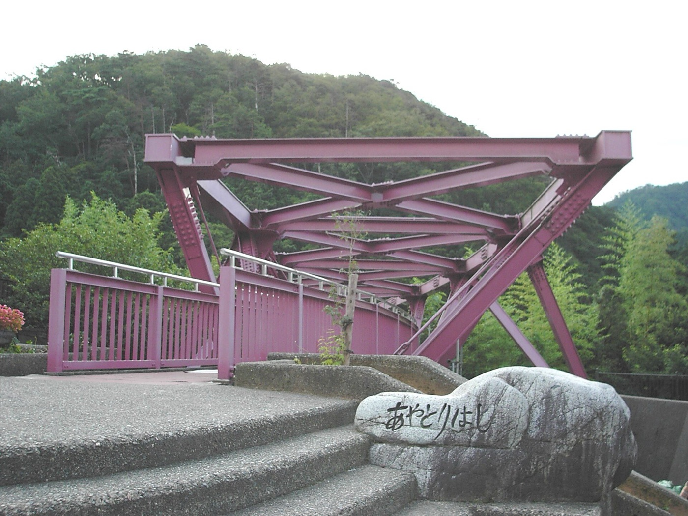
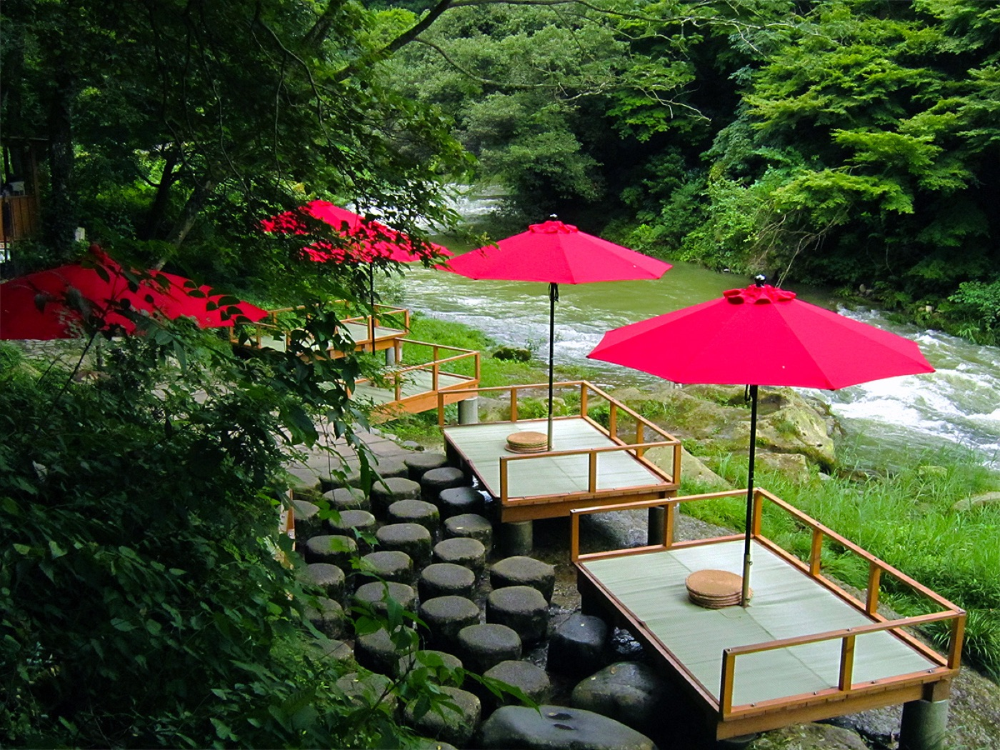
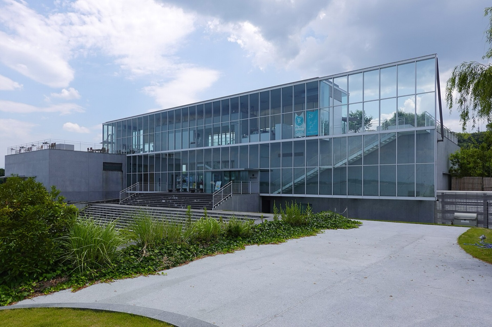
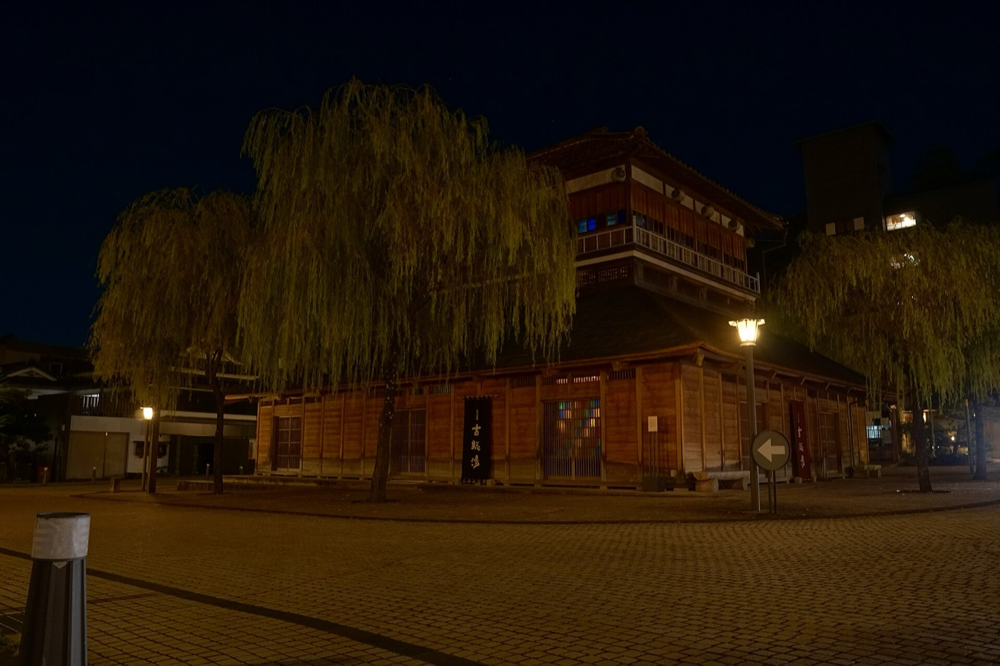
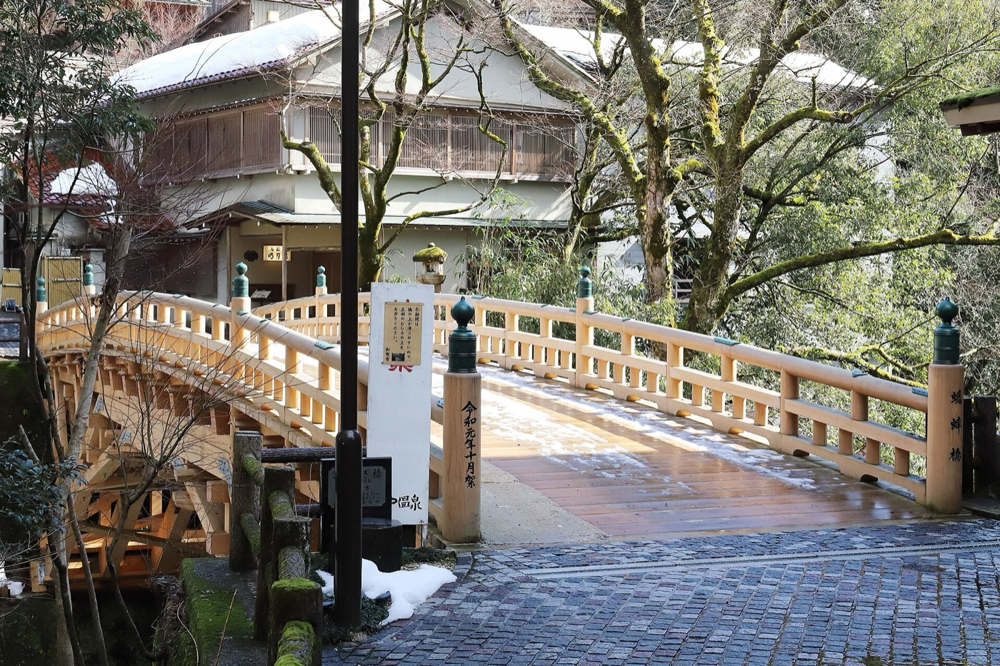
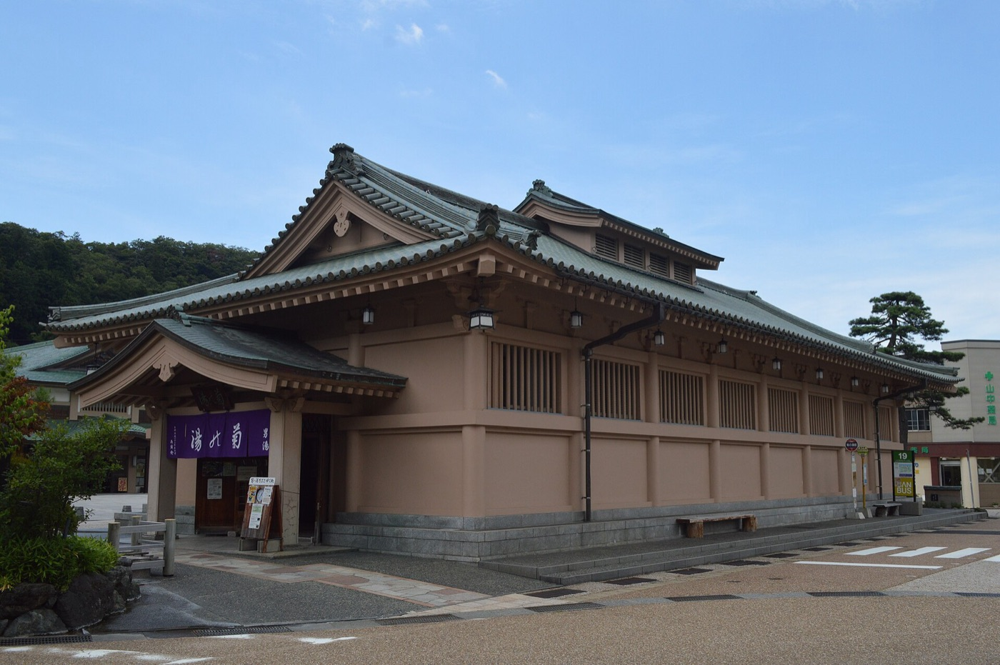
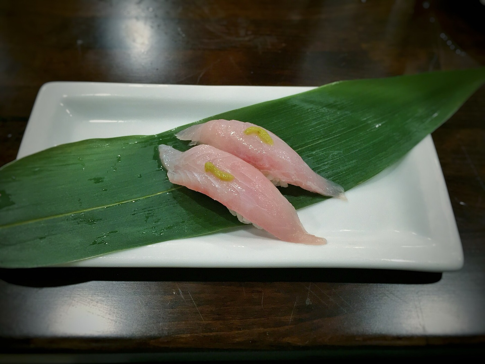
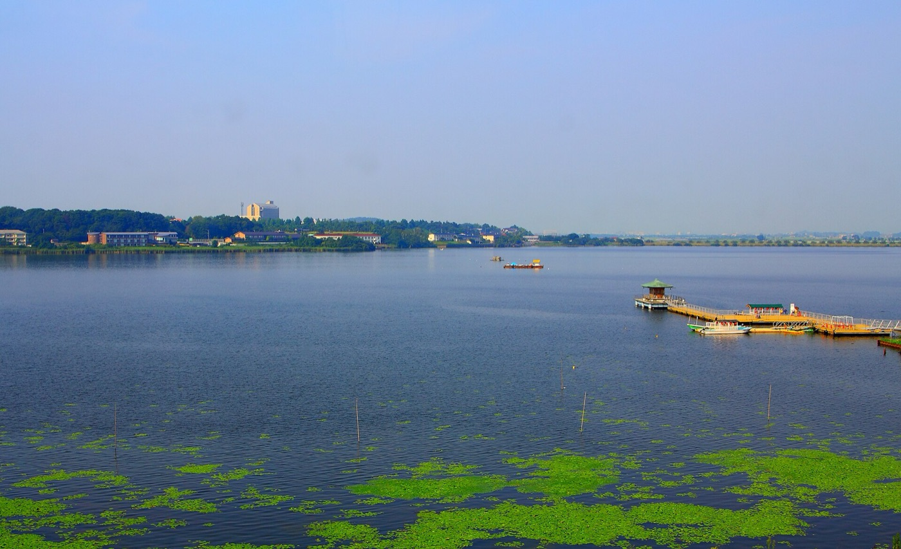

ゆりと 加賀で遊ぶ

- 車
- 9〜19時ガッツ 予約ずみ
- 天気
- 雨のち曇最高23℃・午後は80%
- あやとりはし
- 無料駐車場12台・無料
下にスクロールで1日目 → 2日目
カフェ・寿司・温泉とあやとりはし

ゆりの4つの希望で組みました。全部が山中温泉から車で20分の中に入るので、朝9時に金沢駅前で車を受け取って、19時に返すまでで回れます。下の3案から1つ選んでください。そのあとに温泉15軒・寿司6軒・カフェ8軒のリストを付けてあります。
- 1雨のち曇気象庁 9/15 5時発表。午前90%・午後80%・夜40%。最高23℃
- 2川床は当日朝に電話鶴仙渓の川床は雨と増水で中止。山中温泉観光協会 0761-78-0330
- 3火曜で休みの温泉粟津温泉 総湯・白峰温泉 総湯・無限庵の茶房うるはし。リストからは外してあります
- 4ライトアップは間に合わないあやとりはしは日没後〜22:45に点灯。山中から金沢駅まで70分なので19時返却だと見られない。見るなら車の返却延長をガッツ金沢駅前店 076-255-1182 に電話
どれでまわる？
骨組みが違う3案。A は山中温泉にどっぷり、B は片山津の湖から渓谷へ、C は雨の日むけに屋内を多め。どれも寿司と温泉とカフェとあやとりはしは入っています。
山中温泉を一日かけて

一番シンプル。橋を渡って、朝風呂に入って、森のカフェで昼、湯の街を歩いて、夕方に山代で古総湯。寿司は帰りぎわに加賀温泉駅前で早めの夕ごはん。
- 19:00 ガッツ金沢駅前店で車北陸道で加賀ICへ。山中温泉まで約70分
- 210:30 あやとりはし駐車場は橋のたもと（12台・無料）。鶴仙渓の遊歩道は雨だと滑るので、橋とその周りだけで30分
- 311:15 菊の湯¥500・6:45〜22:00。男湯と女湯が別の建物なので、出たら山中座の前で合流
- 412:30 東山ボヌール森の中の一軒家。ビーフシチューが名物。ランチLO14:00・木曜休。川床がやっていればこちらを川床に差し替え
- 514:30 ゆげ街道を歩く山中漆器の店と菊の湯のあいだ。1時間くらい
- 615:30 山代温泉 古総湯車15分。明治の総湯を復元・¥700。シャワーが無いので浸かるだけ。向かいの総湯とのセット券¥1,000
- 716:15 はづちを茶店古総湯の目の前。パフェとあんみつ。17:00まで
- 817:00 回転寿し処 太平加賀温泉駅前・車10分。のどぐろ・甘えび・がすえび。予約不要
- 917:50 出発 → 18:50 返却太平から金沢駅前店まで約55分。ガソリンは満タンに
片山津から山中へ

先に片山津温泉の総湯。谷口吉生のガラス張りで、湯船の高さから柴山潟が見える。雨の日でも景色が持つ数少ない風呂。2階のカフェで合流して、寿司を食べてから山中へ。
- 19:00 ガッツ金沢駅前店で車片山津まで約55分
- 210:00 片山津温泉 総湯¥500・6:00〜22:00。湖を見る「潟の湯」と緑を見る「森の湯」は日替わりで男女入替
- 311:00 まちカフェ総湯の2階。柴山潟と白山を正面に見る窓辺席。10:00〜17:00・木曜休
- 412:00 お食事処 桝屋片山津の海鮮。海鮮彩ちらし¥2,300。11:30〜14:30LO。休みはInstagramで告知なので当日確認 0761-74-8809。ダメなら太平へ
- 513:30 あやとりはし片山津から車25分。橋とその周りで30分
- 614:15 東山ボヌールカフェLO15:00。ケーキとコーヒー
- 715:30 菊の湯 か お花見久兵衛菊の湯は¥500の総湯。お花見久兵衛は¥1,650で手ぶら・漫画・卓球・日本酒バーつきの日帰り宿。11:00〜18:30
- 817:30 出発 → 18:40 返却山中から金沢駅前店まで約70分
岩盤浴でいっしょに

加賀ゆめのゆの岩盤浴は館内着で男女いっしょに過ごせる。加賀エリアで二人で入れる温浴はここだけ。雨が強い日はこれ。橋は傘で渡って、山代の古総湯で締め。
- 19:00 ガッツ金沢駅前店で車加賀ゆめのゆ（箱宮）まで約55分
- 210:00 加賀ゆめのゆ¥850＋岩盤浴¥440。タワーサウナ・炭酸泉・露天。6:00〜25:00・無休。岩盤浴は10:00から
- 312:30 回転寿し処 太平加賀温泉駅前・車10分。予約不要
- 414:00 あやとりはし車20分。傘で橋を渡る。30分
- 515:00 山代温泉 古総湯と総湯車15分。セット券¥1,000。古総湯は浸かるだけ、総湯で髪を洗う
- 616:15 はづちを茶店古総湯の目の前。17:00まで
- 717:15 出発 → 18:15 返却山代から金沢駅前店まで約60分。余裕あり
鶴仙渓にかかる橋

草月流の勅使河原宏がデザインしたS字の橋。全長94.7m・紫紅色。無料でいつでも渡れる。上流のこおろぎ橋（総ひのき）と下流の黒谷橋（石のアーチ）まで遊歩道でつながっている。
- 1駐車場あやとりはし駐車場 12台・無料。こおろぎ橋駐車広場 22台
- 2遊歩道こおろぎ橋〜黒谷橋 約1.3km・通しで30分。階段あり。雨の日は滑るので歩きやすい靴
- 3川床橋のすぐ下。9:30〜16:00・席料¥700（加賀棒茶つき）・川床セット¥1,000。雨と増水で中止。当日朝 0761-78-0330
- 4ライトアップ日没後〜22:45。雨でも点灯。19時返却だと間に合わない
きょう入れる温泉

加賀温泉郷と周りの日帰り入浴。◎は二人でおすすめ、○は良い、△は条件つき、×はきょう入れない。料金は大人1人。全部男女別で、二人で一緒に過ごせるのはゆめのゆの岩盤浴とアローレのプールだけ。
- 1現金を用意総湯は現金。加賀観光ホテルも現金のみ
- 2タオル古総湯はシャワーもアメニティも無し。お花見久兵衛と加賀観光ホテルはタオルあり
- 菊の湯¥5006:45〜22:00。芭蕉の句が名前の由来。男湯と女湯が別の建物
- お花見久兵衛（日帰り）¥1,65011:00〜18:30・木曜休。手ぶらOK・漫画・卓球・日本酒バー込み。貸切露天は要予約
- よしのや依緑園¥9007:00〜10:00／15:00〜24:00。鶴仙渓を正面に見るサウナと外気浴。料金は当日確認
- 古総湯¥7006:00〜22:00。明治の総湯を復元。ステンドグラスと九谷焼タイル。浸かるだけ
- 総湯¥5006:00〜22:00。古総湯の向かい。洗い場あり。セット券¥1,000
- 吉田屋 山王閣¥2,50014:00〜22:30・完全予約制。ひのきのサウナ2つ。当日飛び込み不可
- 片山津温泉 総湯¥5006:00〜22:00。谷口吉生設計。柴山潟を湯船の高さから見る
- 加賀観光ホテル¥80014:00〜19:30。露天22か所の湯めぐり。男15・女7で数が違う。現金のみ
- ホテルアローレ¥1,650平日17:00〜21:00。水着で入るプールとジャグジーは二人で。要電話 0761-75-8000
- 湖畔の宿 森本—立ち寄り湯は休業中
- 加賀ゆめのゆ（箱宮）¥8506:00〜25:00・無休。岩盤浴¥440は館内着で二人いっしょ
- 辰口温泉 里山の湯¥52010:00〜22:00。金沢から35分で一番近い。庭の露天とサウナ
- ぽかぽからんど 泉龍温泉（小松）¥50010:00〜22:30・無休。サウナ+¥200。地元の銭湯型
- 粟津温泉 法師¥1,60013:30〜18:00。718年創業の老舗。混んでいると断られるので朝に電話 0761-65-1111
- 粟津温泉 総湯¥500火曜定休
- 白峰温泉 総湯¥750火曜定休
のどぐろと甘えび

きょう火曜に開いている店だけ。予約なしで入れるのは太平・すし食いねぇ・桝屋。一貫と亀寿司は電話してから。
- 回転寿し処 太平¥1,500〜4,000加賀温泉駅前。11:00〜21:30・水木休。のどぐろ・甘えび・がすえび
- お食事処 桝屋¥1,500〜2,300片山津。11:30〜14:30LO／17:00〜20:30・木曜休。海鮮彩ちらし。休みはInstagram
- すし食いねぇ！小松沖店¥2,000〜3,500小松。11:00〜21:30・無休。金沢港直仕入れの回転寿司
- 鮨 一貫昼¥2,500〜4,400加賀温泉駅から車5分。ミシュラン ビブグルマン。月曜休。0761-74-8555
- 亀寿司¥4,000〜5,000山代温泉。17:00〜21:30・月曜休。昼は前日までの予約制なのできょうは夜だけ
- 一平寿司昼¥1,000〜2,000山代温泉。11:00〜14:00／17:30〜22:00・水曜休。0761-77-1143
川床と森のカフェ
一番の目玉は鶴仙渓の川床。ただし雨で中止になるので、東山ボヌールを第一候補にして、川床がやっていたら差し替え。
- 鶴仙渓 川床¥700〜1,0009:30〜16:00。加賀棒茶と道場六三郎のスイーツ。雨・増水で中止。0761-78-0330
- 東山ボヌール¥600〜2,00010:00〜16:00・木曜休。森の一軒家。ビーフシチュー。ランチLO14:00・カフェLO15:00
- 茶房うるはし（無限庵）¥700〜火曜定休
- はづちを茶店¥700〜1,200山代。古総湯の目の前。9:30〜17:00・水曜休。パフェ・あんみつ
- まちカフェ¥500〜1,200片山津総湯の2階。10:00〜17:00・木曜休。湖と白山の窓辺席
- 茶房古九谷¥600〜1,200九谷焼美術館2階。9:30〜17:30・月曜休。九谷の器でコーヒー
- FUZON KAGA¥700〜1,500大聖寺の旧魚市場。12:00〜18:00・金曜休。自家焙煎。不定休あり 0761-75-7340
- よつばハウス ゆのまち加賀店¥500〜1,500加賀温泉駅直結。9:00〜18:00。時間調整に
19時に車を返してから

車を返したら金沢の夜。片町のおでんとバーは前のページにまとめてあります。三幸（金沢おでん）と源左ェ門は火曜営業。
- 119:00 ガッツ金沢駅前店に返却ガソリンは満タンに
- 2片町へ三幸 本店 16:00〜21:30LO／まごころ 17:00〜翌0:30／倫敦屋酒場 〜24:00
- 316日かがやき502号 金沢7:03発。シェアハウスから駅まで5分
車は予約ずみ
ガッツレンタカー金沢駅前店。9/15の朝9時に受け取って、同じ日の19時に返します。手続きと運転は佑樹。
金沢駅から山中温泉は北陸道 加賀ICで約70分、片山津は約55分、加賀ゆめのゆは約55分。返却は19:00まで。ライトアップを見たいなら延長できるか店に電話。
持ちもの
- 傘一日雨。遊歩道は滑る
- お風呂セットタオル2枚。古総湯はシャワーもアメニティも無し
- 現金総湯・加賀観光ホテル・川床は現金
- 免許証佑樹。運転する人
- 水着C案でホテルアローレのプールに行くなら
- 佑樹車と運転／寿司の電話
- ゆり案を1つ選ぶ／カフェの順番
それでは 9時に駅前で
案が決まったら佑樹に言ってください。途中で変えても大丈夫です。
写真: Wikimedia Commons（各撮影者・CC）。営業時間・料金は2026年9月15日朝の各公式サイト・加賀温泉郷公式・山中温泉観光協会・こまつ観光ナビ。天気は気象庁とtenki.jpの9/15 5時発表。